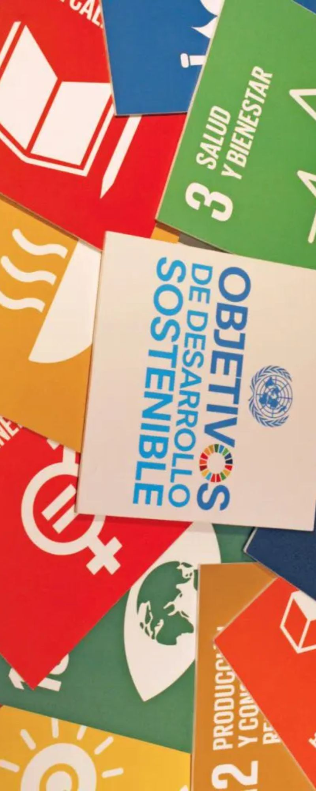
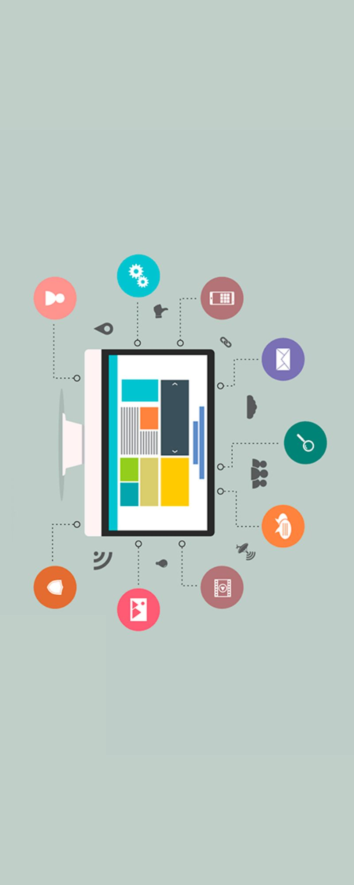

Semana 2

CLASE PRESENCIAL
En esta segunda clase conocimos un poco mas acerca de las ODS, hicimos una dinamica grupal sobre soluciones para problemas relacionados y lo comentamos con todo el salón, fue bastante interesante conocer la manera de ver las cosas de cada compañero.
Semana 2

CLASE VIRTUAL
En esta sesión continuamos trabajando con nuestro sitio web e hicimos un pequeño repaso de lo que es una bitácora, además de responder algunas dudas y consultas, lo que hicimos a continuación fue introducir el tema de Google Sites. También descargamos varias plantillas para ver cual se adaptaba mejor a cada uno y así poder continuar con la creación de nuestra bitacora.